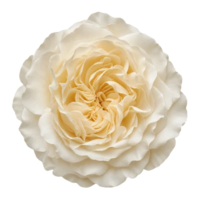
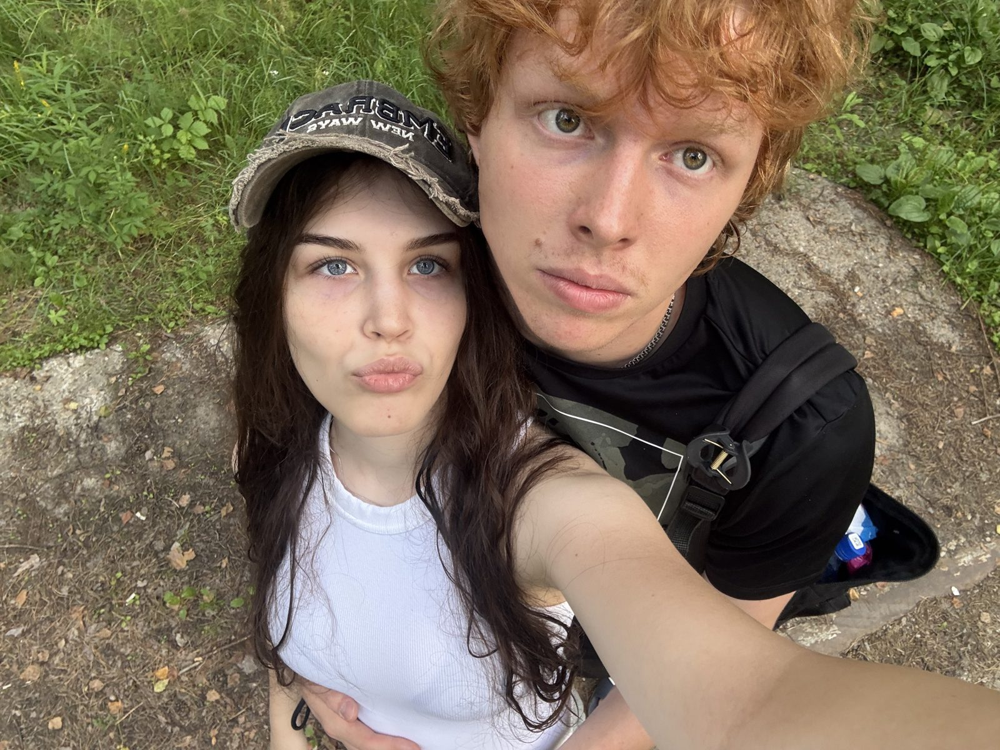
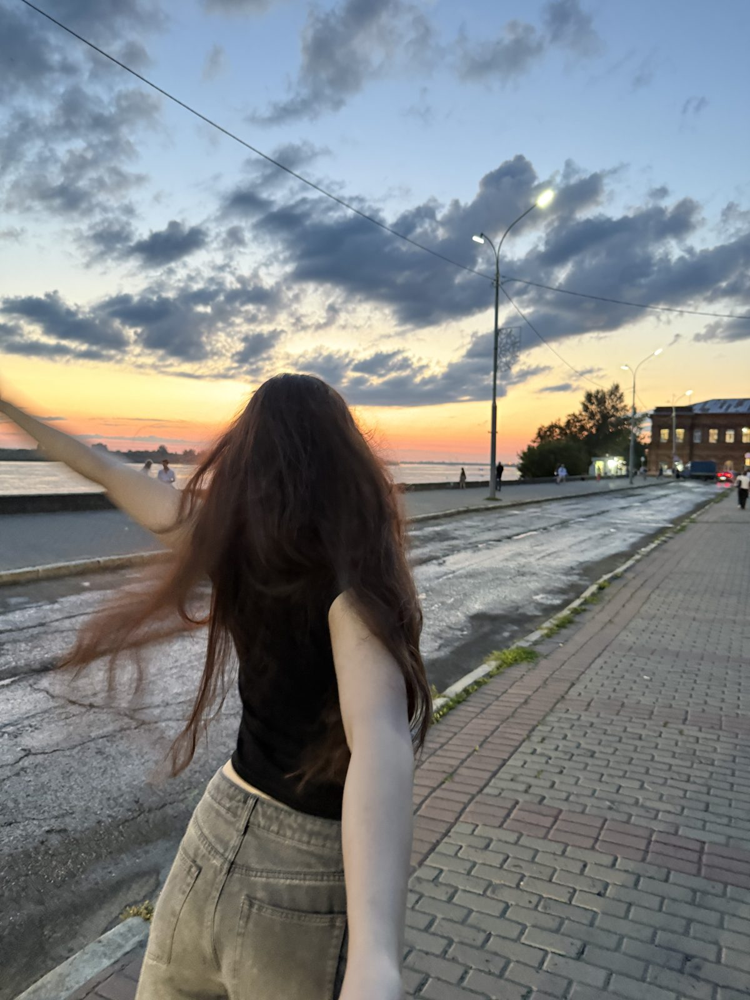
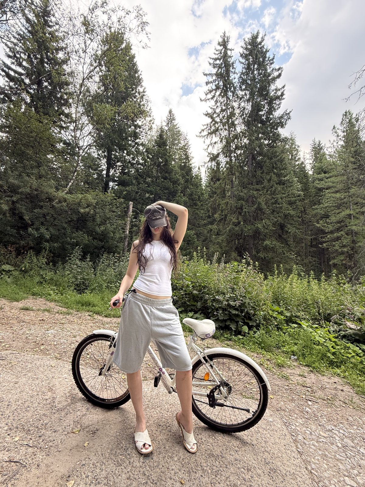
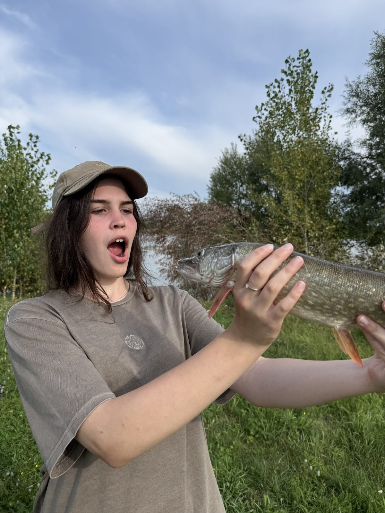
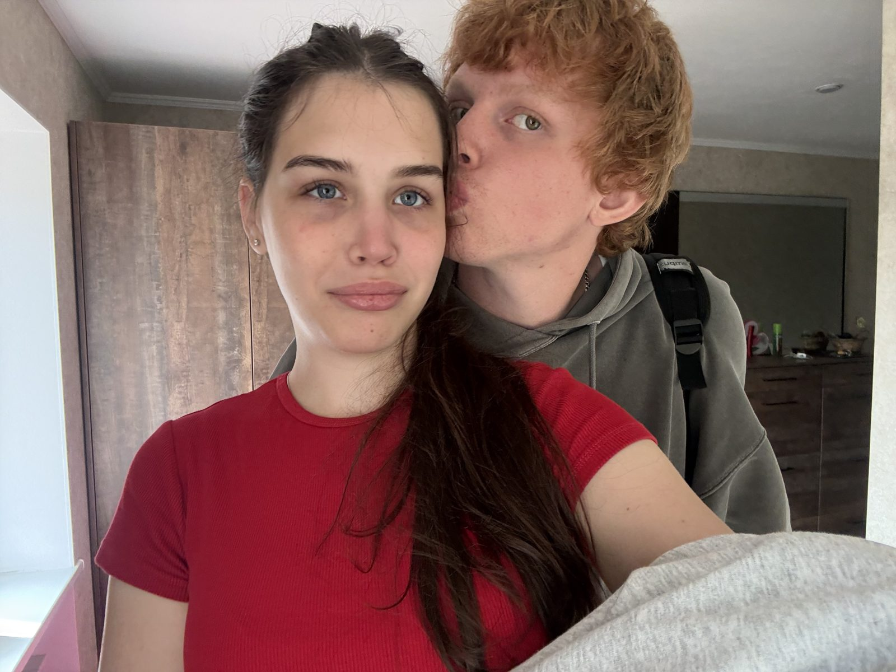

ПРОЛОГЛИЧНЫЙ АЛЬБОМ · 2026
Случайность,
которую я выбрал
бы снова.

В начале года я приехал в Фуджейру. В первый же день вышел играть в пляжный волейбол.
И там оказалась ты.
С днём рождения, любимая
Из одной случайной встречи выросло столько важного. Я собрал здесь наши дни, чтобы снова прожить их с тобой.
Листать нашу историю всё началось у моря…
В начале года я приехал в Фуджейру. В первый же день вышел играть в пляжный волейбол.
И там оказалась ты.
Сначала был волейбол на пляже. Потом карты вечером. Ты захотела встретить рассвет, и я предложил пойти вместе.
Мы провели целый день рядом, гуляли у моря, а вечером впервые поцеловались.
Наше первое «вместе».
Через полтора месяца я приехал к тебе в Нижний Новгород. У нас была целая неделя, чтобы снова гулять, смеяться и просто быть вместе.
Слишком короткая неделя, которую я до сих пор люблю вспоминать.
До следующего «обними меня».
Ты приехала ко мне на полтора месяца. И у нас появились целые обычные дни вместе. Прогулки, домашние вечера, смешные кадры. Наше маленькое счастье в простых вещах.

наше лето
вечера, которые хочется повторить
лето в Томске
и немного наших глупостей
самые важные мелочиСтолько кадров. И ещё больше воспоминаний.
Осенью я прилетел в Нижний Новгород ещё на неделю. Мы снова были рядом, и после разлуки всё ощущалось так знакомо.
Теперь между нами опять расстояние. Но я знаю, к кому хочу возвращаться.
МЕЖДУ НАМИ СНОВА КИЛОМЕТРЫ
Новые встречи. Новые фотографии.
И рассветы, которые мы ещё встретим вместе.
ОДНО МАЛЕНЬКОЕ ОБЕЩАНИЕ
Просто потому, что люблю видеть,
как ты улыбаешься.
И САМОЕ ВАЖНОЕ
С ЛЮБОВЬЮ · В ТВОЙ ДЕНЬ
Я очень рад, что в тот день в Фуджейре мы оказались на одном пляже. Из маленькой случайности выросло столько важного для меня: рассвет у моря, мартовская неделя, наше лето в Томске, октябрьская встреча и все разговоры между ними.
Мне нравится быть с тобой. Узнавать тебя, смеяться вместе, хранить наши фотографии и ждать момента, когда можно будет снова обнять тебя по-настоящему.
Я не знаю, сколько ещё будет вокзалов, аэропортов и дней до встречи. Но знаю, что хочу снова и снова приезжать к тебе, встречать с тобой рассветы и дарить тебе цветы.
Пусть в новом году твоей жизни будет больше счастья, спокойствия и дней, о которых хочется вспоминать. Я очень хочу прожить ещё много таких дней рядом с тобой.
Люблю тебя.
Твой Захар